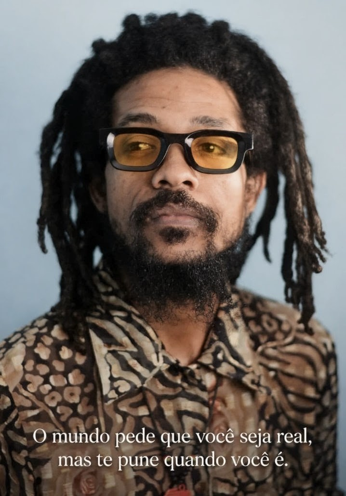

Entrevistas
Vozes da comunidade
Histórias de quem faz a diferença
Conversas com moradores, criadores, trabalhadores e pessoas que inspiram mudanças no seu bairro.
Uma plataforma de comunicação comunitária para dar voz às pessoas, revelar histórias, valorizar talentos e manter viva a cultura angolana.
A Rádio em Movimento nasce da vontade de escutar com atenção e contar aquilo que muitas vezes fica fora dos grandes canais. Cada bairro tem pessoas com ideias, memórias, desafios e talentos que merecem espaço.
Queremos aproximar a comunidade, registar histórias locais, conversar sobre os assuntos que importam e celebrar a riqueza cultural de Angola — com respeito, verdade e participação.
Uma comunidade cresce quando as suas histórias encontram quem as escute.
Rádio em Movimento · A voz da comunidadeUm espaço para entrevistas, reportagens, histórias de bairro e conversas que ajudam a compreender melhor a nossa realidade.
Conversas com moradores, criadores, trabalhadores e pessoas que inspiram mudanças no seu bairro.
Questões do quotidiano, desafios locais e ideias para melhorar a vida em comunidade.
Tradições, música, palavras, criatividade e histórias que ajudam a contar quem somos.

Uma voz que aproxima pessoas, revela histórias e valoriza a identidade cultural. Através de entrevistas e conversas com membros das comunidades, Patrice dá espaço às experiências, aos talentos e às realidades dos bairros.
Nota: este texto é ilustrativo e poderá ser substituído pela biografia oficial.
Entrar em contacto ↗Envie uma sugestão, indique alguém com uma história inspiradora ou partilhe um assunto importante no seu bairro.